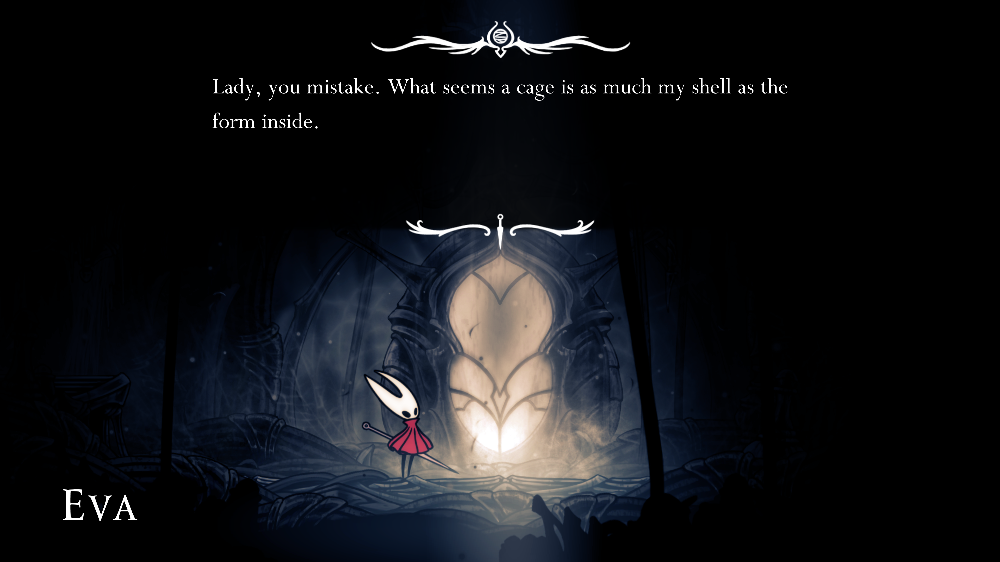

explaining myself through stories
A story is a way to say something that can't be said any other way, and it takes every word in the story to say what the meaning is. You tell a story because a statement would be inadequate. When anyone asks what the story is about, the only proper thing is to tell him to read the story.
i fall back into stories because i don't know any other way to explain myself. stories convey the sense of “there is more here than i can say aloud”. you don’t expect to start a story halfway through and understand the nuance. you see an image from a movie and you don’t say “what does it mean”, you say “what is it from”?
![a white drawing of a stylized red lightning strike in a black-and-white sky. it pierces a blue heart almost all the way down to its point, branching and forking through it. in the background, black stars twinkle. at the bottom, in blackletter font, reads "Something is wrong". the text is green, except "wrong", which is in bold red. to the right, a figure stands dressed in blue pants and a black top and shoes, with just a hint of black hair. two its left are two stylized drawings of fire, and underneath, the text "i am the sound of distant thunder". in the bottom right are three rust magnets with the pride flag in the background.](../assets/something-is-wrong.png)
this is from In Stars And Time and Carrie and 17776 and a photo of me standing on the shore of Onondaga Lake Park. it doesn't mean one thing. it means all those things. i can't explain them all or i'd spend the whole post explaining and not get to my point.
this is why i like stories. you have an intuition that you need to understand the whole, not just the parts.
i am Justice of Toren One Var. not literally -- Justice of Toren only exists in stories, and even in stories there is nothing left of her and she is dead dead dead and there is only Breq, with her half-healed leg and her ancillary implants and her hopeless devotion to the people around her. but i think, i act, in the way she does:
How could my voice—One Var—speak so calmly? How could I even know what words to say, what answer to make, when the whole basis for all my actions—even my reason for existence—was thrown into doubt?
[...]
It makes the history hard to convey. Because still, “I” was me, unitary, one thing, and yet I acted against myself, contrary to my interests and desires, sometimes secretly, deceiving myself as to what I knew and did. And it’s difficult for me even now to know who performed what actions, or knew which information. Because I was Justice of Toren. Even when I wasn’t. Even if I’m not anymore.
you see? you see how limited words are? even full paragraphs are not sufficient to convey the things i mean. you have to read the story, to feel its meaning.
Jo Linsay Walton tries. he does try.
When most people think "river" I bet they think "personal identity." Every time you point to the Esk and say, "That's the Esk," you're pointing to different water. Over time, the course changes too, the contours that the river sits in. Not that it ever really sits. But every time you point and say, "That's the Esk," you're still telling the truth.
In Ancillary Justice, One Esk Nineteen is part of a warship. Ann Leckie was probably thinking of a ship, not a river, when she named her. Several British navy ships have been called Esk: the most famous is probably the one sunk by a Nazi mine during the Texel Disaster in 1940.
But: Esk, a ship that is also a river. A ship that flows, that splits, that is filled with and made of materials that are always about to slip away, and yet can be truthfully named with a single name.
even this probably reads as too abstruse to you. the word squirm beneath your feet with their sense gelatinized, like cobblestones turned to jellyfish. i am sorry. i can only do what i can do.
my aunt asked me the other day if i was dating anyone, if there was someone special in my life. i was at my brother's wedding. these questions come up.
i told her i don't have words to explain it to her. she said it's ok if you don't want to talk about it, i'm just trying to get to know you better. i said no, i literally don't have words for it. my relationships don't map onto easy labels. i can't give you a straight answer; i have to give you an introduction to queer culture.
she was dissatisfied by that. i guess i would be too.
sometimes words don't get close enough to the thing i mean. if i say a word, i'm not just saying a definition, i'm evoking a connotation, a memory, a feeling. i can be precise with definitions; it's much harder to be precise with feelings. stories give us that shared context where, even if we aren't feeling the same things, i know we have roughly the same memories.
sometimes i have words in mind that might even be true by a dictionary definition, but don't have the right meaning. instead i have to build my own meaning around them; shade them just darkly enough that you can see the outline; without giving you a false sense of security that you've seen the whole thing at once.
Edouard Glissant talks about the right to opacity:
[It is not the case] that everything is futile, but that there are limits to absolute truth. How can one point out these limits without lapsing into skepticism or paralysis? How can one reconcile the hard line inherent in any politics and the questioning essential to any relation? Only by understanding that it is impossible to reduce anyone, no matter who, to a truth he would not have generated on his own. [...] This same opacity is also the force that drives every community: the thing that would bring us together forever and make us permanently distinctive. Widespread consent to specific opacities is the most straightforward equivalent of nonbarbarism.
We clamor for the right to opacity for everyone.
i believe in the right to opacity; for myself, for my relationships, my friends, my communities. i accept that this will distance me from some and deter others. it's a price i'm willing to pay.
i'm tired of explaining parts of myself and having people leap to false conclusions.
if you talk to me and i answer with stories, please know: i am not avoiding you. i am not trying to hide. i simply don't know any other way to explain myself.
